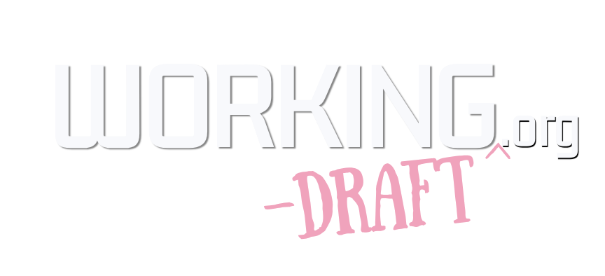

working-draft.org
Tiny tools, loud drafts, and links with attitude.
A cute little hub for public repos, almost-finished ideas, useful scraps, and experiments that made it out of the folder.
Repo Shelf
Loading public repositories...

Working Draft repo shelfworking-draft.org
A cute little hub for public repos, almost-finished ideas, useful scraps, and experiments that made it out of the folder.
Loading public repositories...